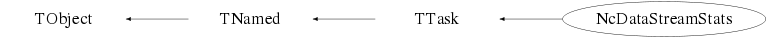

class NcDataStreamStats: public TTask
Class NcDataStreamStats TTask derived class to perform statistics of event classification tags. During data taking or online/offline processing one usually records various tags for each event to indicate which trigger or filter criteria were fulfilled. This also allows to provide different data streams. It is common that a certain tag has the following two indicators pass : This means that the tag criteria have been fulfilled write : This means that the event is actually labeled to be written In case of high-frequency tag streams it is common that not every event will be written to storage in order to limit the data volume. In the DAQ system this is implemented by a downscaling of the corresponding data stream via so-called prescaler settings. The effect is that although for a certain tag the passing criteria have been fulfilled (i.e. the "pass" flag is set), the "write" flag is not always set, but for instance only after every 1000 instances of an activated "pass" flag. This results in a downscale factor of 1000 for that tag stream. This class provides a processor to analyse data samples and provide an overview of the various event tags that were encountered and the corresponding event rates. Via the memberfunctions ActivateTag() and DeactivateTag() the user can (de)activate certain tags in order to investigate the effect in view of defining event samples or background reduction. In case none of these memberfunctions ActivateTag() or DeactivateTag() are invoked, all tags are regarded to be active. The user selected re-tagging results are provided in addition to the regular tag statistics. It should be noted that tags that are explicitly de-activated via DeactivateTag() can not be activated anymore via invokation of ActivateTag(). Please refer to the docs of these memberfunctions for further details. The input data is specified via the memberfunction AddInputFile(). All data files that contain NcEvent (or derived) data structures are allowed. In order to obtain the required data, the NcEvent (or derived) structure should contain a NcDevice with the corresponding name (e.g. DAQ, Trigger, Filter,...) and in which each tag is stored as a Hit (=NcSignal) with the corresponding tag name (e.g. "LowPt"). Each Hit has to have at least 2 signal slots, each with the appropriate name to indicate the "pass flag" value and the "write flag" value. Instead of the names "pass" and "write", various other naming conventions (e.g. "condition" and "prescale") are often used. The name of the required device (e.g. "Filter") and the naming conventions of the "pass flag" and "write flag" (e.g. "condition" and "prescale", respectively) are specified via the memberfunction SetDeviceNames(). Once the user has provided all necessary information, the analysis is performed by invoking the statement "ExecuteTask()" as indicated in the example below. This class is a generalisation of the original trigger-stats.cc and filter-stats.cc ROOT macros of Nick van Eijndhoven (IIHE-VUB, Brussel, 09-dec-2009). Example : // This example performs an analysis of IceCube data // contained as IceEvent structures in *.icepack files // within a Branch "IceEvent" of a Tree "T". // Load the necessary libraries gSystem->Load("ncfspack"); gSystem->Load("icepack"); // Initialisation to perform an analysis of IceCube event filter statistics NcDataStreamStats fstat; fstat.AddInputFile("*.icepack","T","IceEvent"); fstat.ListInputFiles(); // Activate some tags to investigate a certan event sample fstat.ActivateTag("GFU"); fstat.ActivateTag("HESE"); fstat.ActivateTag("EstresAlert"); fstat.ActivateTag("EHEAlert"); // De-activate some tags to investigate background reduction fstat.DeactivateTag("EHEAlertFilterHB"); // Provide a progress output line every 1000 events fstat.SetPrintFrequency(1000); // Specify that we will access the NcDevice named "Filter" // and that the "pass flag" is called "condition" // and the "write flag" is called "prescale" fstat.SetDeviceNames("Filter","condition","prescale"); // The statement below shows the alternative for a "Trigger" analysis // where the trigger tags do not have "pass" nor "write" indicators. // fstat.SetDeviceNames("Trigger","*","*"); // Perform the analysis. fstat.ExecuteTask(); --- Author: Nick van Eijndhoven 15-jun-2018, IIHE-VUB, Brussel
Function Members (Methods)
public:
| NcDataStreamStats(const NcDataStreamStats& q) | |
| NcDataStreamStats(const char* name = "NcDataStreamStats", const char* title = "Event tag statistics") | |
| virtual | ~NcDataStreamStats() |
| virtual void | TTask::Abort()MENU |
| void | TObject::AbstractMethod(const char* method) const |
| void | ActivateTag(TString name) |
| virtual void | TTask::Add(TTask* task) |
| void | AddInputFile(TString file, TString tree, TString branch) |
| virtual void | TObject::AppendPad(Option_t* option = "") |
| virtual void | TTask::Browse(TBrowser* b) |
| static TClass* | Class() |
| virtual const char* | TObject::ClassName() const |
| virtual void | TTask::CleanTasks() |
| virtual void | TTask::Clear(Option_t* option = "") |
| virtual TObject* | Clone(const char* name = "") const |
| virtual Int_t | TNamed::Compare(const TObject* obj) const |
| virtual void | TTask::Continue()MENU |
| virtual void | TNamed::Copy(TObject& named) const |
| void | DeactivateTag(TString name) |
| virtual void | TObject::Delete(Option_t* option = "")MENU |
| virtual Int_t | TObject::DistancetoPrimitive(Int_t px, Int_t py) |
| virtual void | TObject::Draw(Option_t* option = "") |
| virtual void | TObject::DrawClass() constMENU |
| virtual TObject* | TObject::DrawClone(Option_t* option = "") constMENU |
| virtual void | TObject::Dump() constMENU |
| virtual void | TObject::Error(const char* method, const char* msgfmt) const |
| virtual void | Exec(Option_t* opt) |
| virtual void | TObject::Execute(const char* method, const char* params, Int_t* error = 0) |
| virtual void | TObject::Execute(TMethod* method, TObjArray* params, Int_t* error = 0) |
| virtual void | TObject::ExecuteEvent(Int_t event, Int_t px, Int_t py) |
| virtual void | TTask::ExecuteTask(Option_t* option = "0")MENU |
| virtual void | TTask::ExecuteTasks(Option_t* option) |
| virtual void | TObject::Fatal(const char* method, const char* msgfmt) const |
| virtual void | TNamed::FillBuffer(char*& buffer) |
| virtual TObject* | TObject::FindObject(const char* name) const |
| virtual TObject* | TObject::FindObject(const TObject* obj) const |
| Int_t | TTask::GetBreakin() const |
| Int_t | TTask::GetBreakout() const |
| virtual Option_t* | TObject::GetDrawOption() const |
| static Long_t | TObject::GetDtorOnly() |
| virtual const char* | TObject::GetIconName() const |
| TList* | TTask::GetListOfTasks() const |
| virtual const char* | TNamed::GetName() const |
| virtual char* | TObject::GetObjectInfo(Int_t px, Int_t py) const |
| static Bool_t | TObject::GetObjectStat() |
| virtual Option_t* | TObject::GetOption() const |
| virtual const char* | TNamed::GetTitle() const |
| virtual UInt_t | TObject::GetUniqueID() const |
| virtual Bool_t | TObject::HandleTimer(TTimer* timer) |
| virtual ULong_t | TNamed::Hash() const |
| virtual void | TObject::Info(const char* method, const char* msgfmt) const |
| virtual Bool_t | TObject::InheritsFrom(const char* classname) const |
| virtual Bool_t | TObject::InheritsFrom(const TClass* cl) const |
| virtual void | TObject::Inspect() constMENU |
| void | TObject::InvertBit(UInt_t f) |
| virtual TClass* | IsA() const |
| Bool_t | TTask::IsActive() const |
| virtual Bool_t | TObject::IsEqual(const TObject* obj) const |
| virtual Bool_t | TTask::IsFolder() const |
| Bool_t | TObject::IsOnHeap() const |
| virtual Bool_t | TNamed::IsSortable() const |
| Bool_t | TObject::IsZombie() const |
| void | ListInputFiles(Option_t* opt = "") const |
| virtual void | TTask::ls(Option_t* option = "*") constMENU |
| void | TObject::MayNotUse(const char* method) const |
| virtual Bool_t | TObject::Notify() |
| void | TObject::Obsolete(const char* method, const char* asOfVers, const char* removedFromVers) const |
| static void | TObject::operator delete(void* ptr) |
| static void | TObject::operator delete(void* ptr, void* vp) |
| static void | TObject::operator delete[](void* ptr) |
| static void | TObject::operator delete[](void* ptr, void* vp) |
| void* | TObject::operator new(size_t sz) |
| void* | TObject::operator new(size_t sz, void* vp) |
| void* | TObject::operator new[](size_t sz) |
| void* | TObject::operator new[](size_t sz, void* vp) |
| NcDataStreamStats& | operator=(const NcDataStreamStats&) |
| virtual void | TObject::Paint(Option_t* option = "") |
| virtual void | TObject::Pop() |
| virtual void | TNamed::Print(Option_t* option = "") const |
| virtual Int_t | TObject::Read(const char* name) |
| virtual void | TObject::RecursiveRemove(TObject* obj) |
| void | TObject::ResetBit(UInt_t f) |
| virtual void | TObject::SaveAs(const char* filename = "", Option_t* option = "") constMENU |
| virtual void | TObject::SavePrimitive(ostream& out, Option_t* option = "") |
| void | TTask::SetActive(Bool_t active = kTRUE)TOGGLE |
| void | TObject::SetBit(UInt_t f) |
| void | TObject::SetBit(UInt_t f, Bool_t set) |
| void | TTask::SetBreakin(Int_t breakin = 1)TOGGLE |
| void | TTask::SetBreakout(Int_t breakout = 1)TOGGLE |
| void | SetDeviceNames(TString dev, TString pass, TString write) |
| virtual void | TObject::SetDrawOption(Option_t* option = "")MENU |
| static void | TObject::SetDtorOnly(void* obj) |
| void | SetMaxEvt(Int_t n) |
| void | SetMaxTag(Int_t n) |
| virtual void | TNamed::SetName(const char* name)MENU |
| virtual void | TNamed::SetNameTitle(const char* name, const char* title) |
| static void | TObject::SetObjectStat(Bool_t stat) |
| void | SetPrintFrequency(Int_t m) |
| virtual void | TNamed::SetTitle(const char* title = "")MENU |
| virtual void | TObject::SetUniqueID(UInt_t uid) |
| virtual void | ShowMembers(TMemberInspector&) |
| virtual Int_t | TNamed::Sizeof() const |
| virtual void | Streamer(TBuffer&) |
| void | StreamerNVirtual(TBuffer& ClassDef_StreamerNVirtual_b) |
| virtual void | TObject::SysError(const char* method, const char* msgfmt) const |
| Bool_t | TObject::TestBit(UInt_t f) const |
| Int_t | TObject::TestBits(UInt_t f) const |
| virtual void | TObject::UseCurrentStyle() |
| virtual void | TObject::Warning(const char* method, const char* msgfmt) const |
| virtual Int_t | TObject::Write(const char* name = 0, Int_t option = 0, Int_t bufsize = 0) |
| virtual Int_t | TObject::Write(const char* name = 0, Int_t option = 0, Int_t bufsize = 0) const |
protected:
| virtual void | TObject::DoError(int level, const char* location, const char* fmt, va_list va) const |
| void | TObject::MakeZombie() |
Data Members
public:
| enum TObject::EStatusBits { | kCanDelete | |
| kMustCleanup | ||
| kObjInCanvas | ||
| kIsReferenced | ||
| kHasUUID | ||
| kCannotPick | ||
| kNoContextMenu | ||
| kInvalidObject | ||
| }; | ||
| enum TObject::[unnamed] { | kIsOnHeap | |
| kNotDeleted | ||
| kZombie | ||
| kBitMask | ||
| kSingleKey | ||
| kOverwrite | ||
| kWriteDelete | ||
| }; |
protected:
| TObjArray* | fAct | Array with activated tags |
| Bool_t | TTask::fActive | true if task is active |
| TString | fBranchname | The name of the Branch containing the NcEvent (or derived) data structures |
| Int_t | TTask::fBreakin | =1 if a break point set at task extry |
| Int_t | TTask::fBreakout | =1 if a break point set at task exit |
| TChain* | fData | The master data Chain used for the analysis |
| TObjArray* | fDeact | Array with de-activated tags |
| TString | fDevname | The name of the NcDevice that contains the various event tags |
| Bool_t | TTask::fHasExecuted | True if task has executed |
| Int_t | fMaxevt | Maximum number of events to be processed |
| Int_t | fMaxtag | Maximum number of tags to be processed |
| TString | TNamed::fName | object identifier |
| TString | TTask::fOption | Option specified in ExecuteTask |
| TString | fPassname | Name of the tag passing flag |
| Int_t | fPfreq | The print frequency for producing a progress output line |
| TList* | TTask::fTasks | List of Tasks |
| TString | TNamed::fTitle | object title |
| TString | fWritename | Name of the tag writing flag |
| static TTask* | TTask::fgBeginTask | pointer to task initiator |
| static TTask* | TTask::fgBreakPoint | pointer to current break point |
Class Charts
{kind=link}
{kind=link}
{kind=link}
{kind=link}

Function documentation
NcDataStreamStats(const char* name = "NcDataStreamStats", const char* title = "Event tag statistics")
Constructor and initialisation of default parameters.
void AddInputFile(TString file, TString tree, TString branch)
Add an input file containing NcEvent (or derived) data structures to be analysed. Input arguments : file : Name of the input file containing the ROOT Tree (wildcards are allowed) tree : Name of the Tree containing the data branch : Name of the Branch containing the NcEvent (or derived) data structures Notes : 1) This memberfunction may be invoked several times to accumulate data files. 2) The "tree" name may vary for different input files, but the "branch" name has to be the same for all the input files.
void SetMaxEvt(Int_t n)
Set the maximum number of events to be processed. The default constructor has set n=0 which means no limitation.
void SetMaxTag(Int_t n)
Set the maximum number of tags to be processed. The default constructor has set n=99.
void SetPrintFrequency(Int_t m)
Set print frequency to provide a progress output line every "m" events.
The default constructor has set m=0 which means that no progress printout is produced.
void SetDeviceNames(TString dev, TString pass, TString write)
Set the name of the NcDevice and the names of the tag passing criteria. It is common that a certain tag has the following two indicators pass : This means that the tag criteria have been fulfilled write : This means that the event is actually labeled to be written In case of high-frequency tag streams it is common that not every event will be written to storage in order to limit the data volume. In the DAQ system this is implemented by a downscaling of the corresponding data stream via so-called prescaler settings. The effect is that although for a certain tag the passing criteria have been fulfilled (i.e. the "pass" flag is set), the "write" flag is not always set, but for instance only after every 1000 instances of an activated "pass" flag. This results in a downscale factor of 1000 for that tag stream. Instead of the names "pass" and "write", various other naming conventions (e.g. "condition" and "prescale") are often used. Via this memberfunction one can specify the names used by the current experiment. Note : In case passname="*" and/or writename="*", no check will be made for the corresponding flag setting and a value of 1 will be assumed for both.
void ListInputFiles(Option_t* opt = "") const
Provide an overview of the various input files. The input argument "opt" corresponds to the available options of TChain::Print(). By default opt="".
void ActivateTag(TString name)
Activate a certain tag for the combined pass*write statistics which will enable to study user selected event samples. It should be noted that this doesn't affect the results for the regular individual "pass" and "write" statistics. In case the specified "name" matches (part of) a certain tag name, that specific tag will be activated. All characters in "name" are taken literally, so wildcards are not allowed. Example : If name="LowPt" it would activate both tags "LowPtMuon" and "LowPtPion". Notes : 1) If this memberfunction is not invoked, all tags are regarded as active. 2) If this memberfunction is invoked, all tags that are not explicitly activated by the user will be considered de-activated. 3) This memberfunction may be invoked several times to activate various tags before executing the task. 4) Tags that are explicitly de-activated by the user via invokation of DeactivateTag() can not be activated anymore.
void DeactivateTag(TString name)
De-activate a certain tag for the combined pass*write statistics which will enable to study background reduction. It should be noted that this doesn't affect the results for the regular individual "pass" and "write" statistics. In case the specified "name" matches (part of) a certain tag name, that specific tag will be de-activated. All characters in "name" are taken literally, so wildcards are not allowed. Example : If name="LowPt" it would de-activate both tags "LowPtMuon" and "LowPtPion". Notes : 1) This memberfunction may be invoked several times to de-activate various tags before executing the task. 3) Tags that are explicitly de-activated via this memberfunction can not be activated anymore via invokation of ActivateTag().
TObject* Clone(const char* name = "") const
Make a deep copy of the current object and provide the pointer to the copy. This memberfunction enables automatic creation of new objects of the correct type depending on the object type, a feature which may be very useful for containers when adding objects in case the container owns the objects.